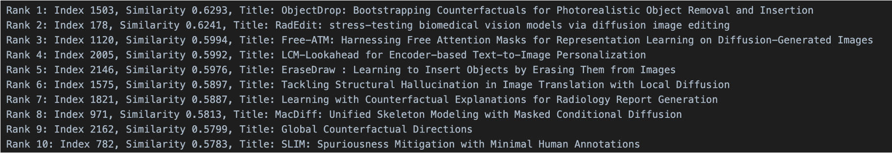

How to Find the Right Papers to Read from Thousands?
Motivation: why I started to be interested about this
2 weeks ago, I attended the European Conference on Computer Vision (ECCV) in Milan. I was very surprised how exciting a conference could be, as this was the first top-tier, large conference I had ever attended. The excitement came from many aspects, some of which were beyond my expectations.
I wrote a LinkedIn post to share some of my personal ‘awards’ for ECCV this year, which included quite a few surprises I encountered at the conference. You can read it at this link;)
Among all of these, I was particularly surprised by how fantastic the experience was during the poster sessions – that I ended up stopping going to any oral but only attending poster session, with each for more than 3 hours. Whenever I spotted something related to my interests, I noticed that the posters very close by (poster number \(\pm\) 3) were very likely to be on the same topic.Additionally, posters nearby, at a slightly farther distance but not too far away (poster number \(\pm\) 10 ~ 15), might not have the same keywords but could still be highly relevant to my interests, meaning that they shared similarities in research direction beyond mere keyword overlap.
This fact intrigued me so much – hhow do they manage to sequence the posters so that they are clustered around those with similar topics?
As I was really curious about how they did it, I thought about asking people on the committee, but I failed because I didn’t know who to reach out to. When I presented this finding in our section meeting, my colleagues mentioned that it was done using 1-D t-SNE of the paper embeddings at CVPR this year (as mentioned by Morten). At ECCV, I didn’t see or hear any information about it, but I assumed a similar approach was applied. My colleagues also mentioned that they might have used the track information collected during the submission phase.
Problem definition
To better define the problem, I would like to write down a more precise description as followed.
Given a set of documents \(D = \{f\}_{i=1}^n\), where each document \(f_i\) contains multiple pieces of information, that \(f_i = \{a_{f_i}, b_{f_i}, c_{f_i}, ...\}\) (in practice, we might concatenate all information into a single string, but here, I aim for a more general formulation), our goal is to determine a sequence of \(D\), denoted as \(S = k_1, k_2, ...\), where \(k\) is the index of the original file index. This yields a document sequence \(S_f = {f_{k_1},f_{k_2},…}\), where:
The closer two files are in the sequence, the more similar they should be w.r.t research topics;
Considering the hierarchical relationship between broad and narrow topics (e.g., algorithmic fairness as a broader topic and a specific bias mitigation method as a more specialized topic), broader topics should be prioritized, and the sequence should not switch back and forth between broad and narrow topics. E.g. it is preferable to have A1-A2-A3-3B-2B-1B, rather then A1-B1-B2-A2-A3-B3, assuming the A represents broader topic in this scenario, and numbers denote more specific subtopics;
(optional) If the layout of the physical position of the document is given, it will be preferably that the physical position are also taking into account (this will make this problem much harder so therefore are discarded in this post).
A simple solution based on OpenAI API
A straight forward idea will be using the embeddings of the documents from pre-trained foundation models. Of course there might be some limitations of such, which we will discuss in the following result section. However, this is the most effortless way of doing so, so here we go:
- Get the title and abstract of all papers from ECCV from the webpage;
- Get the embeddings of them from OpenAI API. Here I choose the model
text-embedding-3-small(for more details of this model please refer to OpenAI document) which return a vector of size1536; - Dimensional reduction and visualise the embeddings;
- Define a similarity score and start the interesting part of this project :) For simplicity, I used cosine similarity, as it works best for sparse vectors, just like in this case (we have around 2,300 data points, each represented by a 1536-dimensional vector).
By which you can now find papers that are closer to your specified one in the embedding space. I used my own paper - Fast Diffusion-Based Counterfactuals for Shortcut Removal and Generation - as an example, and here are the results:
Results using FastDiME as an example

Which is surprisingly good, 4 out of the top 5 results are posters that I stopped by during the poster session and actually discussed with their main authors (except for the LCM paper). Among the top 10 papers, there are 6 that I found particularly relevant. Additionally, the 1st, 2nd, 5th, and 9th papers are content-wise very close to ours.
The real question is how to build the sequence for the poster exhibition. I implemented a simple greedy approach, and here is the result showing the top 20 points of the path starting from FastDiME (you can zoom in for easier navigation).
From this, we can observe that the results are not ideal. Since the algorithm is too greedy, it tends to prioritize papers with more similarities in smaller aspects, such as wording and dataset, rather than broader research topics similarities like image generation (instead of video generation) or shortcut problems (instead of generic cases).
For example, the third point already shifts the focus to text-to-image generation (Point3: Improving text-guided object inpainting with semantic pre-inpainting). Though the scope is still in image editing, our approach does not use text prompts, making it significantly different from theirs. Point 4, 5, 6, and 7 all fall within the text-to-image generation range. However, starting from Point 8, the reseach topic jumps again, from image generation to video generation, and later to 3D generation or scene rendering.
Take-away messgaes
- It’s an interesting question (or algorithmic challenge?) to determine how to sequence posters in a conference setting so that similar papers are clustered in physical space, enhancing the experience for conference participants.
- This can be simply (though not ideally) addressed by retrieving text embeddings of the paper collection from platforms like the OpenAI API.
- I would love to hear about other solutions! If anyone is interested in such algorithms—especially approaches that incorporate the venue floor plan—it would be amazing! Please drop me an email if you come across anything relevant.
More to read
Of course, many people have tackled the challenge of identifying what to read among the vast number of papers published daily, especially in AI-related fields. Here are some notable efforts: - Scholar inbox, though it does not seem to be open-sourced.
Credits
The implementation is based on Miguel González Duque’s amazing hackathon project for MLLS 2024 retreat. Here is the link to the original project.